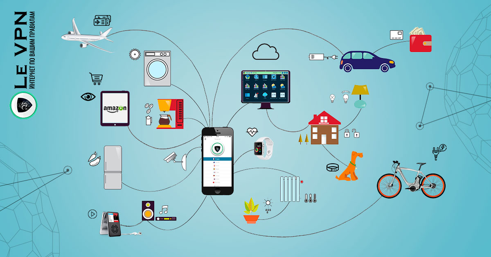

История
Принципы, по которым строится Интернет, впервые были применены в сети ARPANET, созданной в 1969 году по заказу американского агентства DARPA. Используя наработки ARPANET, в 1984 году Национальный научный фонд США создал сеть NSFNET для связи между университетами и вычислительными центрами. В отличие от закрытой ARPANET подключение к NSFNET было достаточно свободным и к 1992 году к ней подключились более 7500 мелких сетей, включая 2500 за пределами США. С передачей опорной сети NSFNET в коммерческое использование появился современный Интернет.
Ключевые принципы
Интернет состоит из многих тысяч корпоративных, научных, правительственных и домашних компьютерных сетей. Объединение сетей разной архитектуры и топологии стало возможно благодаря протоколу IP (англ. Internet Protocol) и принципу маршрутизации пакетов данных. Сам протокол IP был рождён в дискуссиях внутри организации IETF (англ. Internet Engineering Task Force; Task force — группа специалистов для решения конкретной задачи), чьё название можно вольно перевести как «Группа по решению задач проектирования интернета». IETF и её рабочие группы по сей день занимаются развитием протоколов Всемирной сети. IETF открыта для публичного участия и обсуждения. Комитеты организации публикуют так называемые документы RFC. В этих документах даются технические спецификации и точные объяснения по многим вопросам. Некоторые документы RFC возводятся организацией IAB (англ. Internet Architecture Board — Совет по архитектуре интернета) в статус стандартов интернета (англ. Internet Standard). С 1992 года IETF, IAB и ряд других интернет-организаций входят в Общество интернета (англ. Internet Society, ISOC). Общество интернета предоставляет организационную основу для разных исследовательских и консультативных групп, занимающихся развитием интернета.
